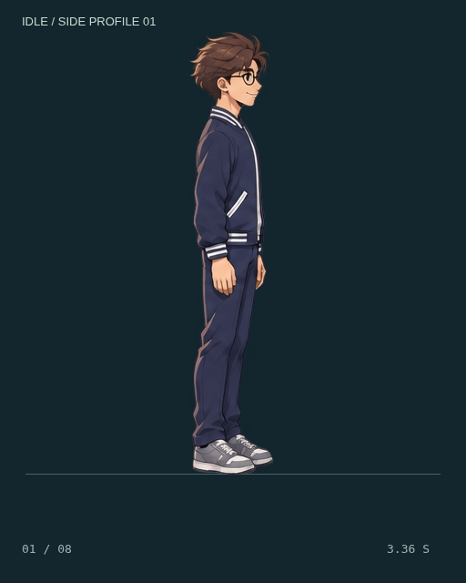

DỊ MÔN / ATTACK PROFILE TRIAL 01
Combo 4 đòn — đấm đất một tay.
Hai đấm thẳng luân phiên tay, tiếp theo là đấm móc. Đòn cuối đổi sang một nắm đấm đánh thẳng xuống sàn, tay còn lại giữ gần ngực.
Đang tải…
Đang tải hoạt ảnh…
Kiểm tra bàn tay và bàn chân
Chọn khung bên trên để xem hướng nắm đấm, cổ tay và tư thế chân.
Đối chiếu màu với idle

Bật VFX để kiểm tra vị trí: áp lực tại nắm đấm, móc đi từ chân lên, chấn động 360° quanh điểm chạm sàn. PNG/GIF xuất riêng chỉ có nhân vật.
Sheet đòn đang chọn · 4 × 2
Mỗi đòn 8 khung, đọc từ trái sang phải, trên xuống dưới. Sheet đầy đủ gồm 4 cột × 8 hàng; mỗi hai hàng là một đòn. Phát một lần và về thế thủ.